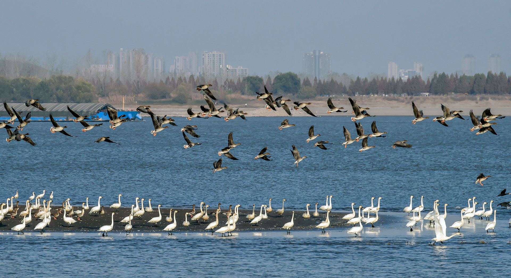

Paso firme en el control de la contaminación acústica
Aumenta el porcentaje de áreas urbanas que cumplen con los estándares nacionales de ruido diurno y nocturno, reflejando la 'determinación estratégica' de China en lograr su reducción
Ciudadanos visitan un parque urbano en Wuhu, provincia de Anhui, en el este de China (Tao Haijin)
Cui Yan
27/2/2026
Recientemente, un periodista extranjero compartió en el sitio web del Financial Times un relato convincente sobre su experiencia con el control del ruido en Pekín. Durante su estancia de varios meses en la capital, el periodista comentó que ya no tenía que preocuparse por el ruido, afirmando: "Duermo mejor que hace años". Ya no necesita su colección de tapones para los oídos de alta calidad, que antes le resultaba indispensable, porque que el ruido general de las calles ha disminuido notablemente desde su primera visita en 2016.
Este testimonio de primera mano destaca los resultados positivos de los esfuerzos continuos de China en el control de la contaminación acústica. Según un informe publicado por el Ministerio de Ecología y Medio Ambiente de China, el porcentaje de áreas urbanas que cumplen con los estándares nacionales de ruido diurno aumentó del 91,3% al 95,8% entre 2014 y 2024, mientras que el cumplimiento nocturno aumentó drásticamente del 71,8% al 88,2%. Estas mejoras reflejan el progreso continuo de China en la lucha contra la contaminación acústica y subrayan la importancia de la "determinación estratégica" en este empeño.
La determinación estratégica, en esencia, implica paciencia, serenidad y un enfoque metódico para alcanzar objetivos a largo plazo.
Se trata de ajustar, no de silenciar
El ruido, a menudo denominado el "pulso" de una ciudad, proviene de diversas fuentes, como la maquinaria de construcción y los vendedores ambulantes, creando un entorno auditivo complejo. Un control eficaz del ruido no busca silenciar por completo estas actividades, sino ajustar el "volumen" de forma adecuada.
Por ejemplo, los sistemas de sonido direccional garantizan que el baile en las plazas públicas solo sea audible dentro de las áreas designadas, mientras que las comunidades residenciales adoptan prácticas de gestión para mantener una atmósfera tranquila. Al evitar medidas drásticas y, en cambio, fomentar la colaboración, construir mecanismos eficaces y promover normas sociales, China ha implementado con éxito medidas de control del ruido sin perturbar la vida cotidiana.
Este enfoque, que prioriza la coordinación reflexiva y el cambio gradual, es aplicable no solo a la gestión del ruido, sino también a la gobernanza ambiental en general. Los cielos despejados no se han logrado deteniendo la producción, sino mediante medidas específicas, como la sustitución del carbón por electricidad o gas natural. De manera similar, el río Amarillo se ha revitalizado no cesando el uso del agua, sino a través de planes de asignación mejorados que equilibran la protección ecológica con los medios de vida locales. La determinación estratégica implica un esfuerzo sostenido a largo plazo. Requiere diligencia y perseverancia, no impaciencia ni inquietud.
Barreras acústicas a lo largo de un tramo de vía férrea en Taizhou, provincia de Zhejiang (Liu Zhenqing)
Además, la determinación estratégica también implica medidas proactivas. Por ejemplo, la introducción de un código para proyectos residenciales ha establecido estándares más altos de aislamiento acústico en la construcción de viviendas, fijando parámetros claros para garantizar la tranquilidad en los hogares. La implementación de la ley de prevención y control de la contaminación acústica ha proporcionado un marco legal para controlar los niveles de ruido, demostrando un sentido de responsabilidad proactivo que complementa un progreso constante y gradual.
Avances en la restauración ambiental
Los avances ecológicos de China se rigen por el mismo principio. Desde la implementación del sistema de líneas rojas para la protección ecológica, que establece una salvaguarda para zonas ecológicas críticas, hasta la firme aplicación de la prohibición de pesca de 10 años en el río Yangtsé, China ha logrado avances significativos en la restauración ambiental.La recuperación de los ecosistemas ha devuelto la vida a paisajes vibrantes, con peces saltando, aves surcando el cielo y marsopas sin aleta deslizándose por las aguas. Los ríos se han vuelto más limpios y las colinas, antes áridas, ahora lucen verdes.
Estas transformaciones son el resultado de acciones pragmáticas y un enfoque constante y metódico para el avance de la civilización ecológica. Al combinar la planificación a largo plazo con medidas proactivas en el presente, China garantiza que los planes visionarios se traduzcan gradualmente en resultados tangibles y sostenibles.
La determinación estratégica también requiere acciones prudentes, racionales y acordes con las leyes de la naturaleza. Una profunda comprensión y dominio de los principios subyacentes son fundamentales para la ejecución exitosa de cualquier iniciativa.
El XIV Plan Quinquenal de acción para la prevención y el control de la contaminación acústica enfatiza la importancia de "seguir las leyes objetivas que rigen la prevención y el control de la contaminación acústica" y "avanzar en el control del ruido por etapas y mediante pasos sistemáticos". Esto refleja el compromiso de garantizar que las acciones estén en armonía con las leyes naturales.
'Respetar las leyes' de la gobernanza ecológica
Más allá de la gestión del ruido, este principio de "respetar las leyes" se extiende a la gobernanza ecológica de China en general. En todo el país, los esfuerzos integrados de protección y restauración han revitalizado los ecosistemas, con más de 120 millones de mu (8 millones de hectáreas) de ecosistemas restaurados. Técnicas como la estabilización de arena mediante cuadrículas y los sistemas de bombeo fotovoltaico desarrollados en Xinjiang se han aplicado con éxito en África, permitiendo el cultivo de árboles frutales incluso en regiones áridas y arenosas.En definitiva, las acciones imprudentes producen resultados mínimos. Al adherirse a la "clave de oro" de las leyes objetivas, China ha logrado un progreso ambiental significativo, demostrando que los esfuerzos cuidadosos y respetuosos de la ley producen resultados mucho más impactantes.

Cisnes migratorios y pagodas gigantes descansan en un islote en el río Yangtze en Tongling, provincia de Anhui, en el este de China (Chu Zhuchuan)
Créditos
Producción: Edicions Clariana SL | Redacción: People's Daily digital | Diseño: Martí Palma | Maquetación: Enric Abad | Fotografías: People's Daily digital y Getty
Un proyecto de Brandslab. Godó Nexus